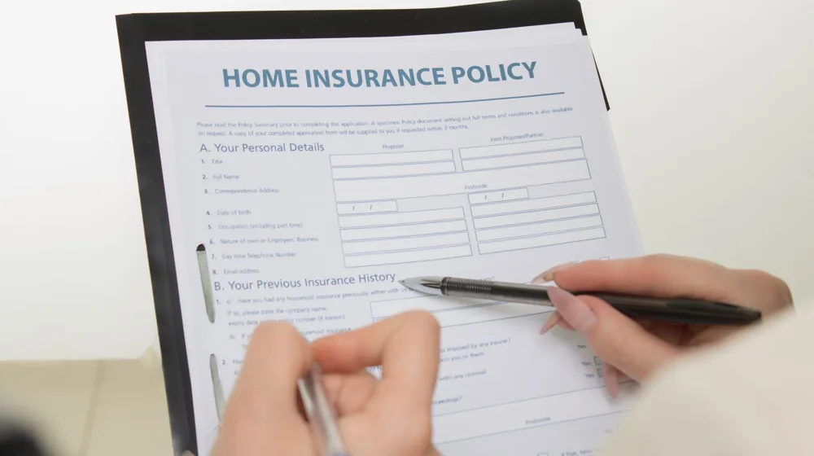

보험 리모델링 실패 피하는 3가지 핵심 원칙 (손해보지 마세요!)
사진: RDNE Stock project / Pexels (무료 이미지, 출처 표기)
보험 리모델링, 왜 필요할까요? (목적과 배경)

보험 리모델링을 생각하고 계신가요? 기존 계약 해지에 대한 불안감과 복잡한 약관 때문에 망설이는 분들이 많습니다. 하지만 인생 주기가 변하고(결혼, 출산, 자녀 독립 등), 새로운 보험 상품이 지속적으로 출시되면서 나의 상황에 맞는 최적의 보장을 찾는 것은 중요한 재정 관리의 일부입니다.
불필요하게 높은 보험료를 내고 있거나, 정작 필요한 보장이 부족한 경우가 많습니다. 보험 리모델링은 이러한 문제를 해결하고, 제한된 예산 안에서 더 효율적인 보장 설계를 통해 미래의 위험에 대비하기 위한 과정입니다.
기존 보험 해지 전, 반드시 확인할 3가지
성공적인 보험 리모델링의 핵심은 기존 보험을 섣불리 해지하지 않는 것입니다. 다음 3가지 사항을 반드시 확인한 후 신중하게 결정해야 불필요한 손실을 막을 수 있습니다.
- 새로운 보험 가입 가능성 확인: 현재 건강 상태가 과거와 달라졌다면, 새로운 보험 가입이 거절되거나 보장이 제한될 수 있습니다. 기존 보험을 해지하기 전에 반드시 새로운 보험의 가입 심사를 먼저 완료하고 승인받아야 합니다.
- 해지환급금 손실 여부 파악: 보험은 초기에 사업비가 많이 반영되므로, 가입 후 얼마 지나지 않아 해지하면 납입한 보험료보다 훨씬 적은 해지환급금을 받거나 아예 없을 수도 있습니다. 예상 해지환급금을 미리 조회하여 손실 규모를 정확히 파악해야 합니다.
- 갱신형 특약의 보험료 인상률 고려: 갱신형 특약이 많다면, 나이가 들수록 보험료가 가파르게 오를 수 있습니다. 기존 보험의 갱신 시점과 인상 폭을 고려하여 앞으로 지불할 총 보험료를 예측해보는 것이 중요합니다.
이러한 요소를 면밀히 검토하고, 필요한 경우 금융감독원 보험다모아 등 공식 채널에서 제공하는 정보나 전문가의 상담을 통해 현재 상태를 객관적으로 진단해 보는 것을 권장합니다.
성공적인 보험 리모델링을 위한 체크리스트
나에게 꼭 맞는 보험을 찾기 위해서는 현재 상태를 정확히 진단하고, 필요한 보장을 명확히 하는 과정이 필수적입니다. 다음 체크리스트를 활용하여 단계별로 점검해 보세요.
이 체크리스트를 통해 현재 보험의 장단점과 필요한 보장을 명확히 파악할 수 있습니다. 2026년 8월 기준으로 많은 보험사들이 다양한 상품을 제공하고 있으므로, 여러 선택지를 비교하는 것이 중요합니다.
초보자가 흔히 겪는 오해와 주의할 점
보험 리모델링 과정에서 많은 사람이 실수하는 부분이 있습니다. 이러한 오해를 피하고 현명한 결정을 내리세요.
첫째, 성급한 해지는 금물입니다. 기존 보험을 해지하고 새로운 보험에 가입하는 과정에서 보장 공백 기간이 발생할 수 있습니다. 이 기간에 예기치 못한 사고나 질병이 발생하면 보장을 받지 못하게 되므로, 반드시 새로운 보험의 가입 절차를 완전히 마무리한 후 기존 보험을 해지해야 합니다.
둘째, 설계사의 조언을 맹신하지 마세요. 모든 설계사가 고객의 이익만을 생각하는 것은 아닙니다. 여러 설계사 또는 독립보험대리점(GA) 소속 전문가와 상담하여 다양한 의견을 듣고, 스스로 학습하여 객관적인 판단을 내리는 것이 중요합니다.
셋째, 모든 보장을 다 가져가려 하지 마세요. 지나치게 많은 특약에 가입하면 보험료가 과도해져 유지하기 어려워질 수 있습니다. 핵심적인 보장부터 우선순위를 정하고, 경제 상황에 맞춰 필요한 부분을 점진적으로 추가하는 유연한 접근 방식이 효과적입니다.
나에게 맞는 보험, 현명하게 선택하는 방법
성공적인 보험 리모델링을 위해서는 새로운 보험을 현명하게 선택하는 것이 중요합니다. 다음 팁들을 참고하여 합리적인 선택을 해보세요.
먼저, 필수 보장을 우선적으로 확보해야 합니다. 실손의료비는 모든 질병과 상해에 대한 병원비 부담을 줄여주는 필수 보험이며, 암, 뇌졸중, 급성심근경색증과 같은 3대 진단비는 치료비 외에 생활비까지 보전해 줄 수 있는 중요한 보장입니다. 가족의 생계를 책임지는 가장이라면 사망 보장 또한 반드시 고려해야 합니다.
다음으로, 비갱신형 보험을 고려해 보세요. 비갱신형 보험은 초기 보험료가 갱신형보다 높지만, 납입 기간 동안 보험료 인상 없이 유지할 수 있어 장기적인 관점에서 총 보험료 부담을 줄이는 데 유리합니다. 특히 진단비처럼 나이가 들수록 발병률이 높아지는 보장일수록 비갱신형이 유리할 수 있습니다.
마지막으로, 다이렉트 보험을 활용하거나 여러 전문가와 상담하세요. 2026년 8월 기준, 온라인 다이렉트 보험은 설계사 수수료가 없어 상대적으로 저렴하게 가입할 수 있습니다. 또한, 한 명의 설계사에게만 의존하기보다는 여러 보험사의 상품을 비교해주는 독립보험대리점(GA)의 전문가나 금융감독원 '보험다모아' 같은 공신력 있는 비교 사이트를 활용하여 객관적인 정보를 얻고 최종 결정을 내리는 것이 좋습니다.
보험 리모델링은 한 번의 결정으로 오랜 기간 영향을 미치는 중요한 재정 계획입니다. 신중한 검토와 충분한 정보 탐색을 통해 나의 상황에 가장 적합한 보장 설계를 완성하시길 바랍니다.
🔗 이 글도 함께 보면 좋아요: 삼성전자 주가, 2024년 투자 전 꼭 알아야 할 3가지 핵심 요소
관련 추천 상품
이 포스팅은 쿠팡 파트너스 활동의 일환으로, 이에 따른 일정액의 수수료를 제공받습니다.